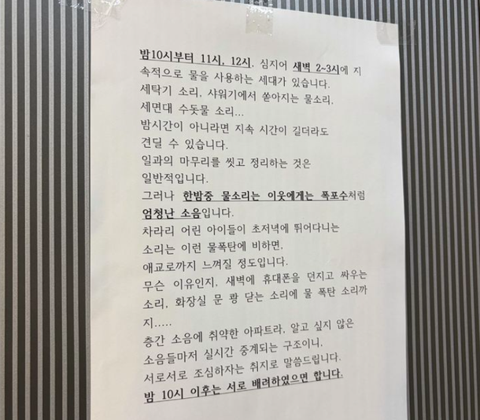

밤 10시 이후 샤워 자제해주세요"…아파트 공지문
댓글
ㄹㅇ 난오늘 11시 출근인데
빌라에서도 안나는 샤워소리가 저렇게 울린다고?
나는 아무상관없거든 새벽에 세탁기 변기 샤워 다 괜찮음
일부러 소리지는거 아닌이상 뭐 사람이 살다보면 그럴수도있지
뭐 맨날 똑같이만사나... 그게싫으면 혼자 떨어져서 살아야지....
근데 사람들 생각이 다 그렇진않나봐
이번에 이사온 정신병자새끼 단체문자로 새벽6시 30분에 쿵쿵 거린다고 배려하고 살라고 문자날리길래 누군가에게는 6시30분은 출근시간이고 누군가에게는 퇴근시간일 겁니다. 그시간까지 작은 소음에도 민감해서 이렇게 문자 날리실 정도시면 단독주택으로 이사를 권장드립니다. 본인만 배려를 받는게 맞다고 생각하시나요? 본인도 남의 생활 패턴시간을 배려해주세요 라고 문자날리니까 답장도안하고 그담부터 소음 민원 없음 ㅋ
그냥 귀마개 끼고 사니까 잘땐 조용하다
모든 사람이 9-6라고 생각하지 마라
그런 세상이었다면 네가 누리는 이 인프라가 말이 되는 세상이 아니다